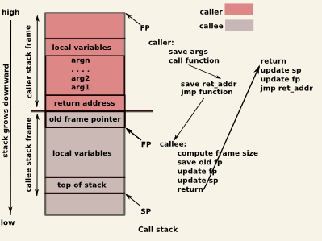

Lab 05 - The Stack. Buffer Management
Resources
python -c 'print "A" * 42' | ./l33tb1n- objdump
- GDB
- strace
- ltrace
Lab Support Files
We will use this lab archive throughout the lab.
Please download the lab archive an then unpack it using the commands below:
student@mjolnir:~$ wget http://elf.cs.pub.ro/oss/res/labs/lab-05.tar.gz student@mjolnir:~$ tar xzf lab-05.tar.gz
After unpacking we will get the lab-05/ folder that we will use for the lab:
student@mjolnir:~$ cd lab-05/ student@mjolnir:~/lab-05$ ls asm-function-call extra off-by-one overflow-address overflow-ptr
Intro
The stack is a dynamic memory region of a process used to organize the contexts of functions as they are being called during execution. The memory region is allocated when a process starts, and is managed by special machine code generated by the compiler handling operations such as: resizing when functions are called or return, storing arguments and local variables, storing metadata.
The subregion of the stack holding data pertaining to a function call is named a stack frame. The compiler will generate code to resize the stack right at the beginning of the function (prologue), and will restore the previous stack size when a function returns (epilogue). Usually, the function caller is also placing arguments on the stack.
General functions of a stack frame:
- store function arguments
- store local variables
- store metadata: previous frame pointer, and return address
Operations:
- resize, by adjusting the stack pointer register
- push (store a value at the top of the stack)
- pop (retrieve a value from the top)
- peek (same as pop, but the value can still be retrieved by a future instruction)
Depending on architecture, the stack may grow downwards or upwards (i.e., from high memory addresses, from low memory addresses). The most common is the former, which means that decreasing the stack pointer will allocate a new memory region on the stack, while increasing the stack pointer will free it.
The layout of 2 stack frames (callee and caller) is shown in the following picture:

Security
Exploiting the stack is one of the oldest ways that leads to arbitrary code execution. The basic approach is a particular case of buffer overflow that will overwrite data on the stack passed the local arguments region and into return addresses and/or old frame pointers. Overwriting the return address of a function enables the attacker to jump anywhere when the execution reaches the ret instruction.
The most basic stack buffer overflow attack makes the following assumptions:
- the stack region has read, write, and execute permissions
- the stack address is known, so any particular function frame address can be predicted
- other metadata on the stack can be predicted and reconstructed by the attacker such that it is valid
Different measures can be taken to reduce the attack surface of the stack:
- remove execute permission - prevents storing shellcode in stack variables
- randomize stack start address - prevents predictable frame and, more specifically, variable locations
- stack canaries - prevents overwrites past the local variables area, without invalidating checks introduced by the compiler at function return
Tips
- Use
x/10i $eipto print instructions starting from the current instruction pointer in GDB. - More information on Examining Data.
Pick a binary from a previous lab, or this one, fire up GDB and explore the following:
- Stack management in function prologue and epilogue.
- Argument passing in callee.
- Alignment issues for local variables. How should the layout (e.g., size, order) look like, considering the source code, and how does it actually looks like in assembly?
- Metadata: old frame pointer and return address.
- Try to change return addresses in GDB before functions return.
- How are local variables addressed in ASM? Can you easily match them with the ones from the source code?
- Display and navigate stack frames in GDB. See Examining the stack.
- Compile with
-fomit-frame-pointerand explore what changed.
Tasks
Assembly Function Calls [2p]
Enter the asm-function-call/ subfolder in the lab archive folder. Check the source code so far. Compile it and run it:
student@host:~/lab-04/skel/asm-function-call$ ls Makefile function_call.asm student@host:~/lab-04/skel/asm-function-call$ make nasm -f elf32 -o function_call.o function_call.asm gcc -m32 function_call.o -o function_call student@host:~/lab-04/skel/asm-function-call$ ls Makefile function_call function_call.asm function_call.o student@host:~/lab-04/skel/asm-function-call$ ./function_call Sum(100) is 5050
The program calls the external function printf by using arguments on the stack. And prints out the sum of the first 100 integers.
printf function arguments are transmitted. First the last function argument then the next one and so forth.
Task [2p]
Update the current assembly implementation such that the user inputs the number to which the sum will be computed. Use scanf call for this. Print a message such as Please insert your number: , before using scanf.
printf call (for printing the intro message) and one for the scanf call, for reading the message.
Read the number into the global num variable. You need to pass the address of the variable on the stack. Simply use
push num
Bonus [1p]
After each call restore the stack pointer to its original value. You can use add to increment the value of the stack pointer register (esp).
Overflow a Pointer [3p]
Enter the owerflow-ptr/ subfolder in the lab archive folder. Check the source code so far. Compile it and run it:
student@host:~/lab-04/overflow-ptr$ ls Makefile overflow_ptr.c student@host:~/lab-04/overflow-ptr$ make gcc -m32 -Wall -Wextra -Wno-unused-function -g -O0 -fno-stack-protector -c -o overflow_ptr.o overflow_ptr.c gcc -m32 overflow_ptr.o -o overflow_ptr student@host:~/lab-04/overflow-ptr$ ls Makefile overflow_ptr overflow_ptr.c overflow_ptr.o student@host:~/lab-04/overflow-ptr$ ./overflow_ptr Provide buffer input: aaaa Dumb number value is 0x12345678. Buffer is aaaa Knock, knock! Who's there? Recursion. Recursion who? Knock, knock!
In the code we see that we use the fgets function to read 64 bytes in a buffer that is only 32 bytes wide. We will overwrite certain values. The aim is to eventually overwrite the f_ptr function pointer located above the buffer array.
Tutorial [1p]
Let's first automate the delivery of input to the buffer by using Python. Let's write 16 bytes of A characters:
python -c 'print 16*"A"' | ./overflow_ptr Provide buffer input: Dumb number value is 0x12345678. Buffer is AAAAAAAAAAAAAAAA Knock, knock! Who's there? Recursion. Recursion who? Knock, knock!
That's nice. This is the way we would disable user input from being provided from standard input and instead using a command such as Python and feedback input trough a pipe.
Let's now increase the number of bytes we are writing to 30, then 31, then 32:
student@host:~/lab-04/overflow-ptr$ python -c 'print 30*"A"' | ./overflow_ptr Provide buffer input: Dumb number value is 0x12345678. Buffer is AAAAAAAAAAAAAAAAAAAAAAAAAAAAAA Knock, knock! Who's there? Recursion. Recursion who? Knock, knock! student@host:~/lab-04/overflow-ptr$ python -c 'print 31*"A"' | ./overflow_ptr Provide buffer input: Dumb number value is 0x12345600. Buffer is AAAAAAAAAAAAAAAAAAAAAAAAAAAAAAA Knock, knock! Who's there? Recursion. Recursion who? Knock, knock! student@host:~/lab-04/overflow-ptr$ python -c 'print 32*"A"' | ./overflow_ptr Provide buffer input: Dumb number value is 0x1234000a. Buffer is AAAAAAAAAAAAAAAAAAAAAAAAAAAAAAAA Knock, knock! Who's there? Recursion. Recursion who? Knock, knock!
As we can see, since the 31st character we've started overwriting the dumb_number variable, placed straight above the buffer array. First we overwrite the last byte of the dumb_number variable (0x78) with the newline character (0x0a) and the the other byte (0x56) with the NUL-byte (0x00).
0x78 and 0x56.
Now let's try to write more, let's go one byte after the dumb_number variable by writing 35 bytes: 32 bytes for the buffer, 3 bytes for the dumb_number variable, 1 byte for the newline and one byte for the NUL-byte going further than the dumb_number variable:
student@host:~/lab-04/overflow-ptr$ python -c 'print 35*"A"' | ./overflow_ptr Provide buffer input: Dumb number value is 0x0a414141. Buffer is AAAAAAAAAAAAAAAAAAAAAAAAAAAAAAAAAAA Segmentation fault
In order to see more of what happened we can use dmesg to check the address that caused segmentation fault:
student@host:~/lab-04/overflow-ptr$ dmesg [221198.802966] traps: overflow_ptr[29201] general protection ip:8048400 sp:ffaa452c error:74f8 in overflow_ptr[8048000+1000]
As seen above the address of the instruction pointer is 0x8048400. The last byte is 0x00. That was the NUL-byte that we overwritten, causing the mayhem. We tried to jump to an address that is now no longer valid.
Let's see what happens if we overwrite more data, we write 37 bytes:
student@host:~/lab-04/overflow-ptr$ python -c 'print 37*"A"' | ./overflow_ptr Provide buffer input: Dumb number value is 0x41414141. Buffer is AAAAAAAAAAAAAAAAAAAAAAAAAAAAAAAAAAAAA Segmentation fault student@host:~/lab-04/overflow-ptr$ dmesg [...] [221294.532786] overflow_ptr[29330]: segfault at 8000a41 ip 0000000008000a41 sp 00000000ff811bac error 14 in overflow_ptr[8048000+1000]
We now see that we've overwritten three bytes of the f_ptr function pointer that we jump to: 0x00 (the NUL byte), 0x0a (the newline), and 0x41 (one of the 37 A characters we've written).
Let's see how we could write some random hex data. Let's overwrite the dumb_number value with 0x87654321, that is the reverse of how it currently is. We will write 32 bytes of A and another four properly arranged bytes to overwrite the dumb_number variable:
python -c 'print 32*"A" + "\x21\x43\x65\x87"' | ./overflow_ptr Provide buffer input: Dumb number value is 0x87654321. Buffer is AAAAAAAAAAAAAAAAAAAAAAAAAAAAAAAA!Ce� Segmentation fault
Note the format for generating hex bytes in Python. And note that, since we use little endian, the order of the bytes is the other way we see them when printed. The print message tells us that the dumb_number variable is using the expected value.
Task [2p]
Let's get ready for some real action. Find out the address of the hidden_function and make the program call it by overwriting the f_ptr function pointer with that address.
objdump on the executable to find out the address of the hidden_function.
Remember that we are using little endian so you'll have to write addresses starting with the first byte.
Bonus [1p]
Make it such that when calling the hidden_function you maintain the value of 0x12345678 for the dumb_number variable. That's the value that gets printed.
Bonus [2p]
Make it such that you would call both the hidden_function and the visible_function.
helper_function not just the f_ptr function pointer.
Off-by-one Overflow [3p]
Enter the off-by-one/ subfolder in the lab archive folder. Check the source code so far. Compile it and run it.
Analyze the binary and source code file and spot the bug.
Task [3p]
Trigger a SIGSEGV signal when opfunc() is called by changing the function pointer's value in GDB. Create an attack input that changes opfunc to 0x41414141.
Then, modify the attack input string and force a call to bad_func().
Bonus [2p]
Same as before, but make it display "Very bad."
Overflow an Address [3p]
Enter the overflow-address/ subfolder in the lab archive folder. Check the source code so far. Compile it and run it.
Analyze the binary and source code file and spot the bug. Trigger a SIGSEGV with a long enough input.
Task [3p]
Make the program call bad_func().
Bonus [1p]
Also call really_bad_func() right after exiting bad_func.
Bonus [1p]
You are now calling the 2 bad functions sequentially, but SIGSEGV is triggered right after this. Avoid the SIGSEGV and exit gracefully.